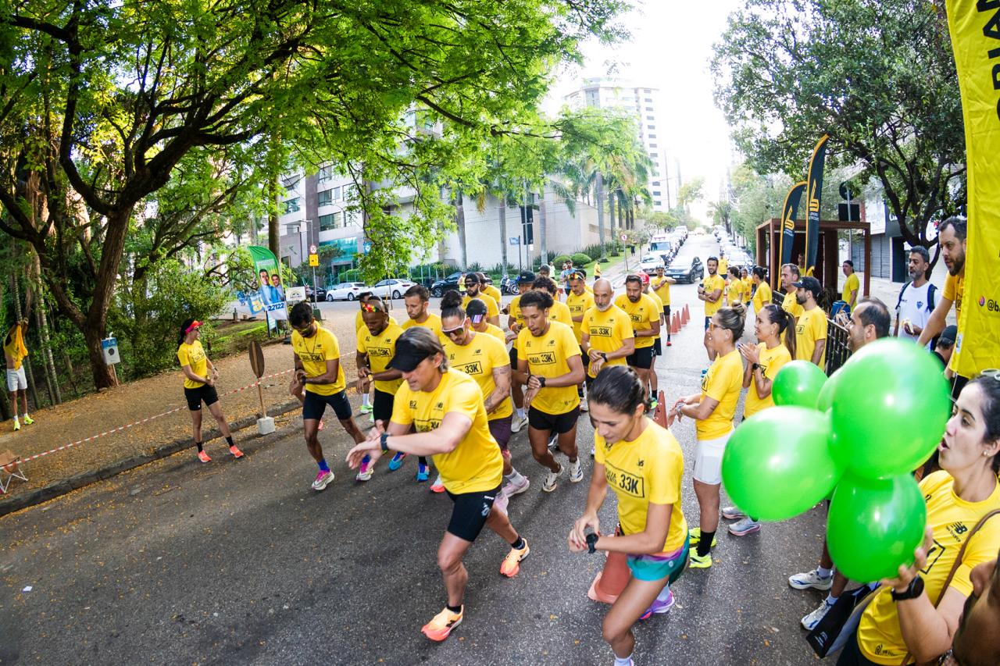
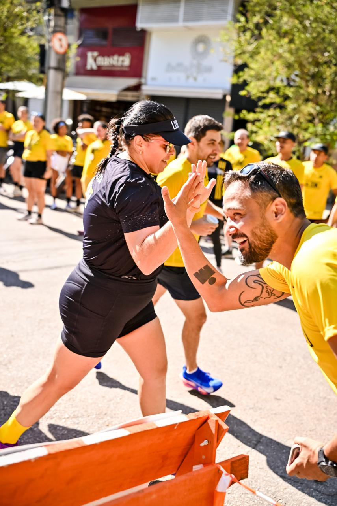
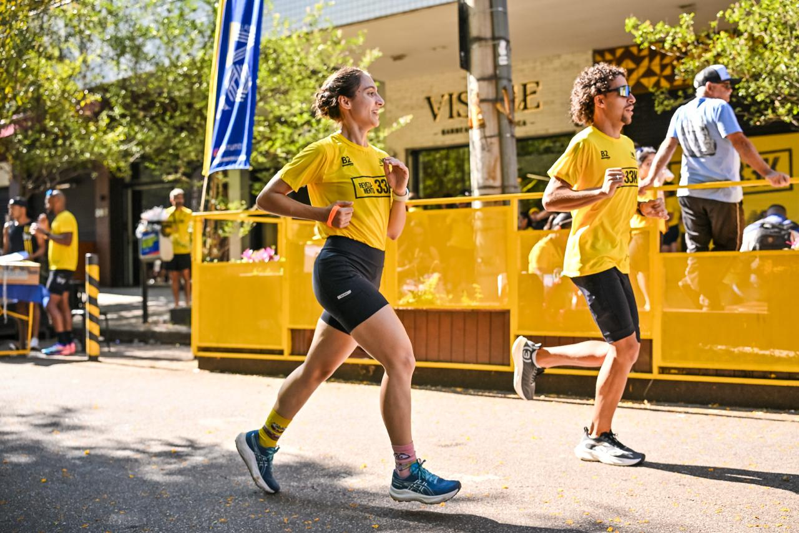
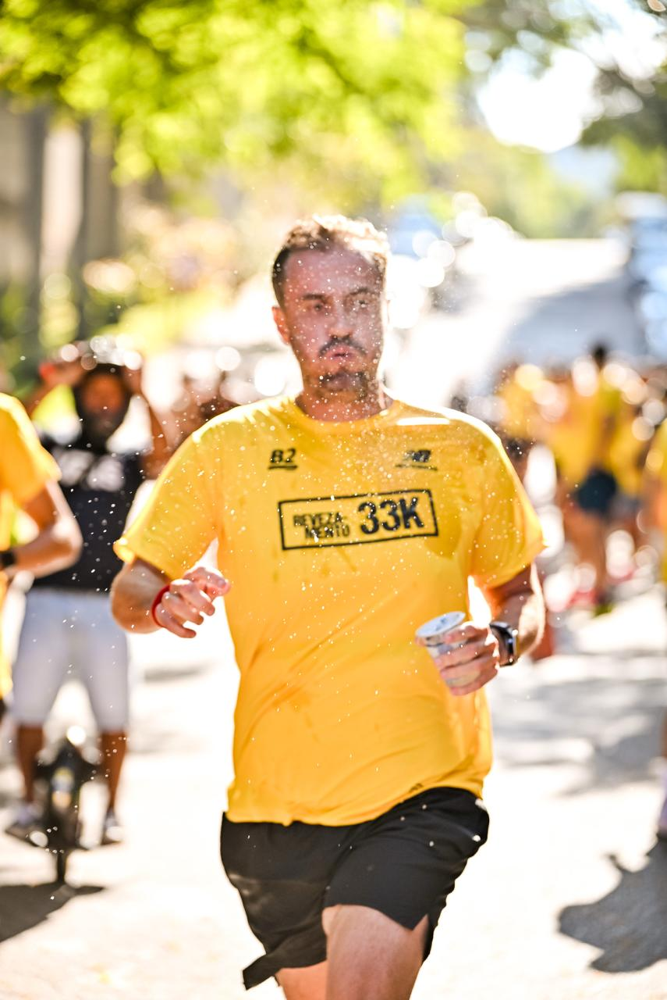
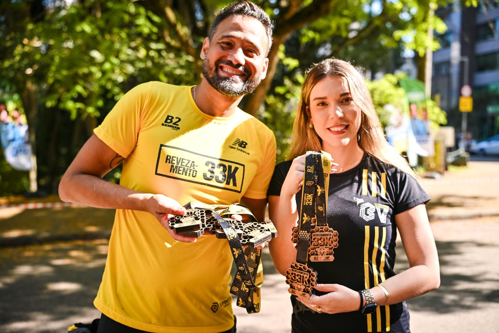
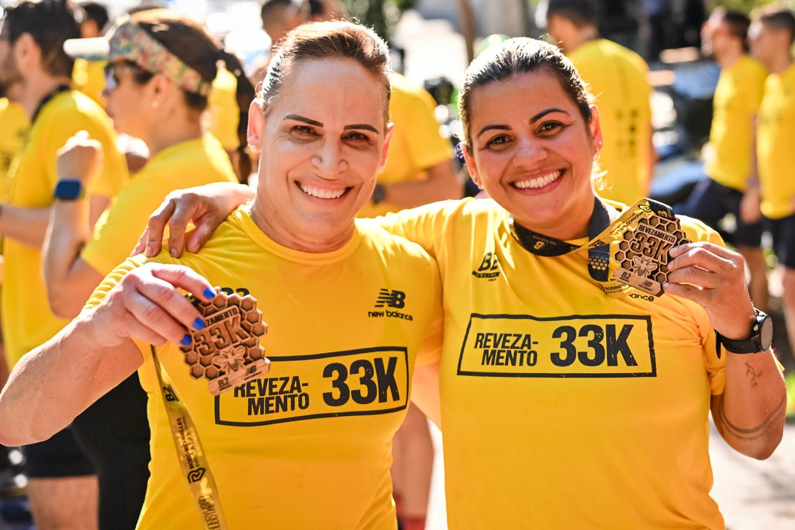
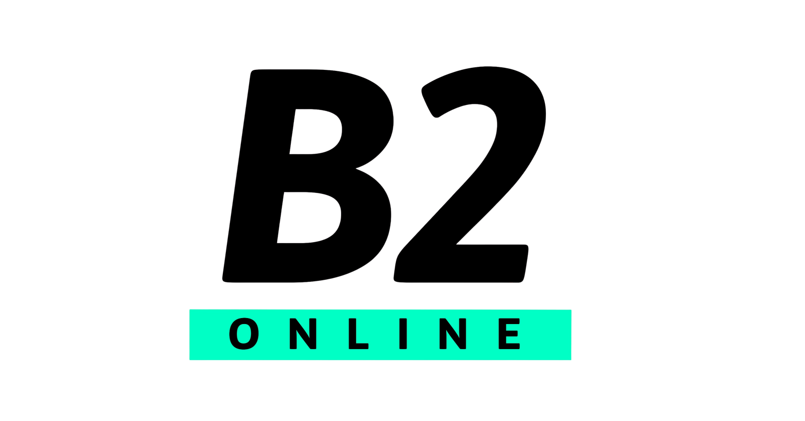
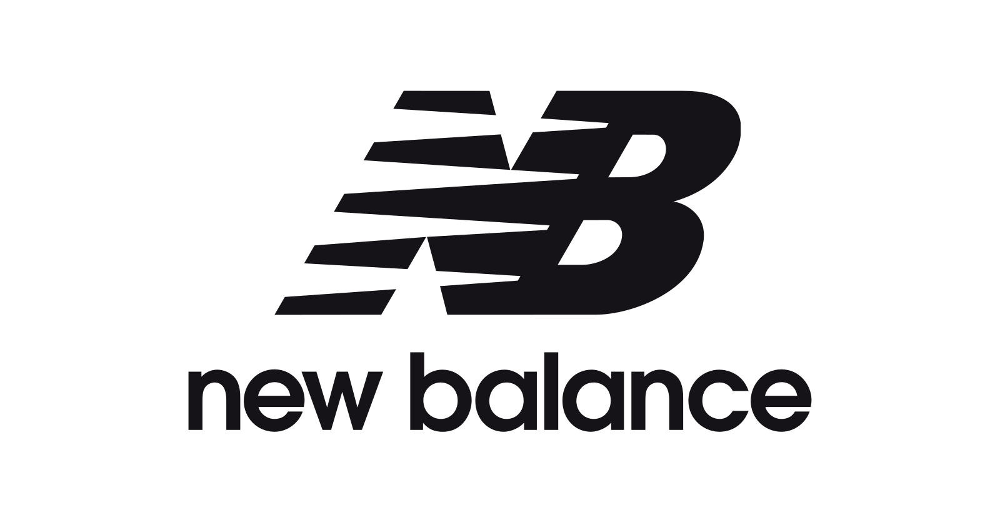

Como foi
Ritmo individual.
Ritmo individual.
Conquista coletiva.
A 5ª edição reuniu corredores em equipes de seis atletas para um desafio em que cada volta dependia de parceria, estratégia e incentivo.
Entre trocas de bastão, torcida e muita energia, a Praça Lagoa Seca virou o ponto de encontro de quem acredita que correr junto leva mais longe.
Momentos da prova
Um pouco do que
Ver todas as fotos
Um pouco do que
ficou dessa edição.






Quem correu junto
Parceiros da 5ª edição.


Seu momento está aqui
Encontre suas fotos do Revezamento 33K.
Acesse a galeria oficial, faça a busca e guarde os melhores registros da sua prova.
Acessar fotos oficiais